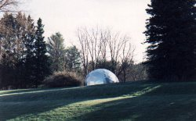
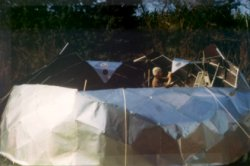
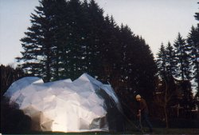
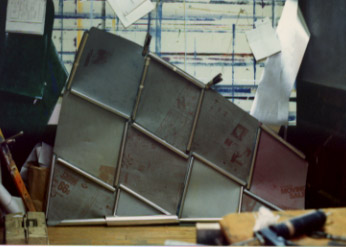
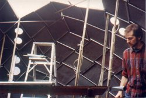
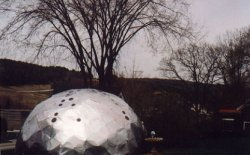

 |
Aluminum Foil Dome |
| In 1988 I decided to try something risky. I collected printing sheets from the local newspaper, cleaned off the ink, and made them into 240 diamond modules (double triangles) to make a 20ft. diameter 8v hemisphere. |
 |
 |
|
 |
 |
|
The 240 diamond modules were so thin (.007") that the whole dome was a
stack of diamonds roughly 22" on a side,weighing 70 lb. 1 1/2" high. When
I assembled a formation of 8 of them to make a panel that was 1/15 of the
dome, it could not be made to stand against the wall. To stiffen it so it
could be assembled I rolled small pieces of the aluminum sheet into tubes
and fastened them in a diamond pattern on the inside. All fastening was
done with Liquid Nails throughout the project. |
||
 |
||
The flanges on the edges of the modules were not turned inward as is usually seen in metal panel domes; the original geodesic patent describes an under- and overlapping pattern of turbining sheets I was eager to try. It worked beautifully. Despite the structural challenges expected with a dome that weighed only 150 lb., it remained watershedding even as it flexed in the wind. It expanded and contracted as interior pressure changed with each breeze- the change in volume was evidenced as the diamond modules went from bending on the short diagonal (as was intended) to bending on the long diagonal, and back again, over and over. |
This dome was assembled, with the help of some friends, in two or three days during a windy and
wet March. Cynthia had no confidence in this failure point project and left for the weekend. As the winds increased, its fate seemed clear: every step I made
to stiffen the dome caused larger sections to pop in, until at last the
southern half blew in completely. I cut it apart , rolled it up and
discarded it. It lasted a couple of weeks as I recall. |
|